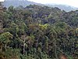

biomass
matter

Source: Wikipedia
Wikipedia Page (Something wrong with this association? Let us know.)
Wikidata Page (Something wrong with this association? Let us know.)
Occurs in:
- above-ground_biomass~harvested_grain__mass_fraction
- biomass~microbial-and-soil_pool~organic~stabilized-as-nitrogen__mass-per-area_density
- biomass~microbial-or-soil_pool~organic~stabilized_nitrogen_immobilization__gross_mass-per-area_density
- biomass_nitrogen_accumulation_at-harvest__mass-per-area_density
- crop_biomass_nitrogen_application__mass-per-area_density
- crop_biomass__mass-per-area_density
- above-ground_crop_biomass~dry__mass-per-area_density
- crop_biomass~microbial-and-soil_decomposition_carbon_respiration__mass
- biomass~removed_nitrogen__mass-per-area_density
- biomass~microbial-and-soil~stabilized_decomposition_carbon_respiration__mass_rate
- crop_residue_pool_root-and-rhizodeposit_biomass_addition__one-year_time_integral_of_mass_flux